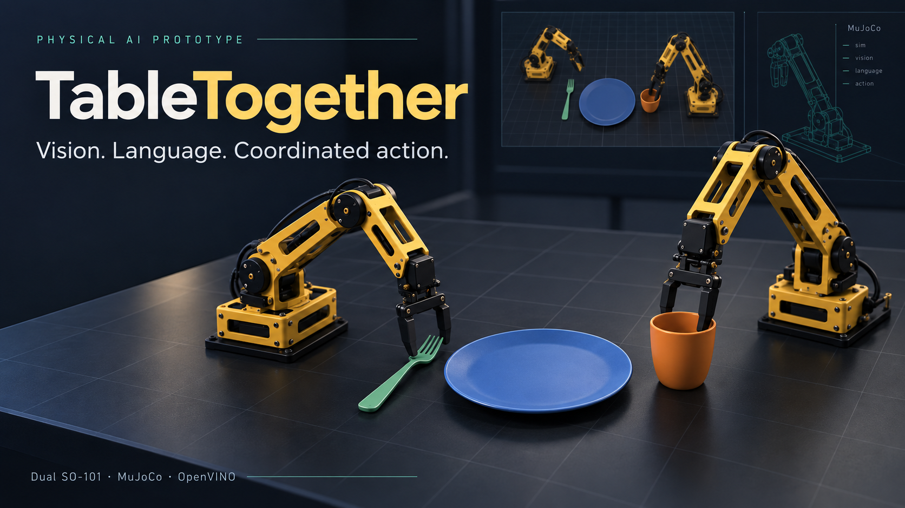

PUBLIC DEMO · RECORDED SIMULATION
Two arms. One place setting.
A trained vision-language policy coordinates two simulated SO-101 arms in MuJoCo. OpenVINO runs the policy locally on an Intel CPU.
This page plays recorded runs and lets you inspect their evidence. Live robot simulation runs in the downloadable Python application. The cover is concept artwork.
Watch all ten evaluation runs
Command: “Set the table. Start with the cup.” Seeds 600–609, with object positions varied by ±8 mm. Every outcome appears in this 2:37 recording at approximately 2× simulation speed.
Measured task success
| Fresh OpenVINO tests | Success |
|---|---|
| Cup first | 5/10 |
| Utensil first | 5/10 |
Training used 75 demonstrations and 1,350 keyframes. Validation success improved from 6/8 to 7/8, but fresh-scene reliability remains limited.
How the policy works
The model reads overhead RGB, instruction tokens, twelve joint observations and the current action index. It predicts joint targets and durations for eighteen keyframes.
MuJoCo contacts move the objects. The learned rollout uses no scripted expert fallback. The plate starts in place, and the arms perform complementary actions in sequence.
Broader robustness
| Paired stress condition | Success |
|---|---|
| Standard positions | 6/10 |
| Lighting/background | 4/10 |
| Mass/friction | 6/10 |
| Horizontal size | 7/10 |
| Combined changes | 6/10 |
Separate PyTorch evaluation, seeds 700–709. Recovery and unfamiliar-shape generalization remain unfinished.
Intel execution and project materials
Verified host: Core Ultra 5 125U, Series 1. Intel’s OpenVINO CPU support matrix supports Series 2/3 compatibility in principle. Actual Series 2/3 execution remains unverified. This site does not run inference on Vercel hardware.